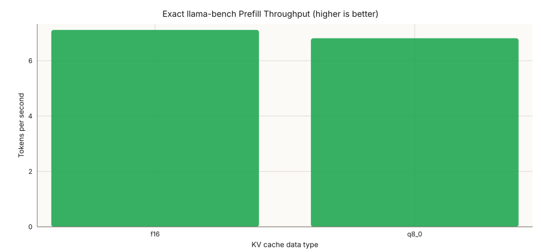
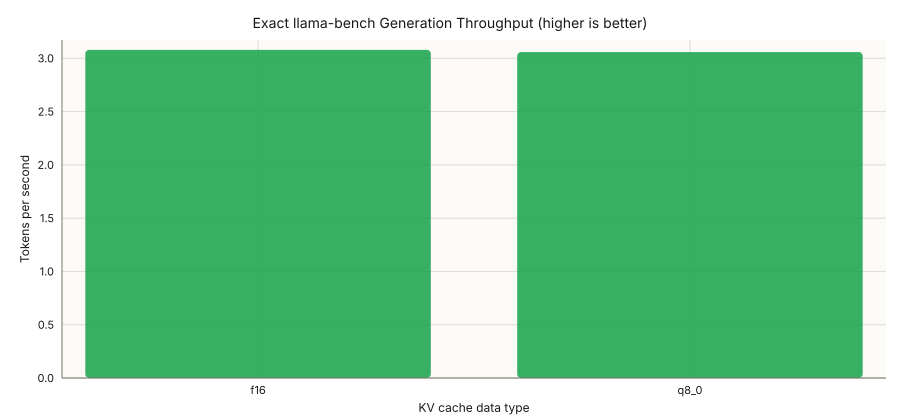
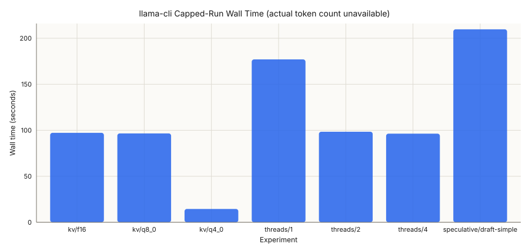
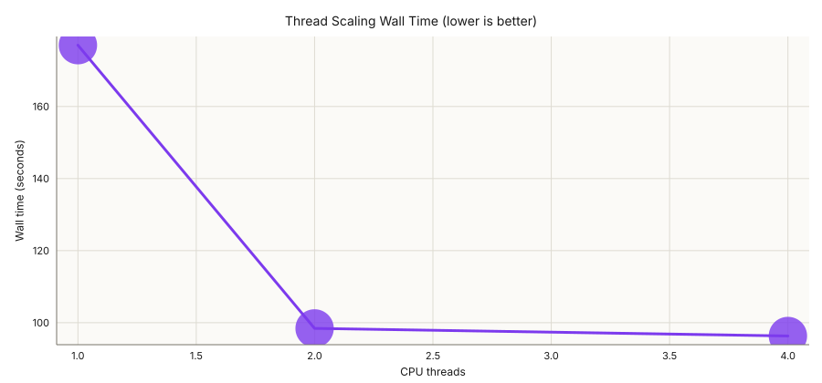
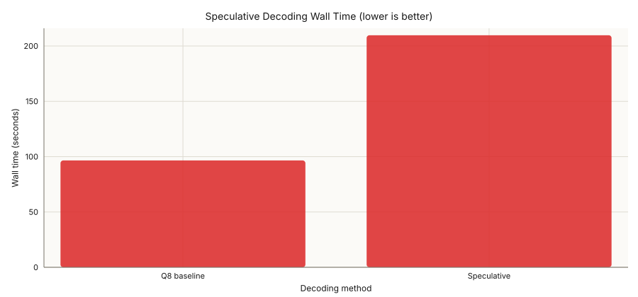
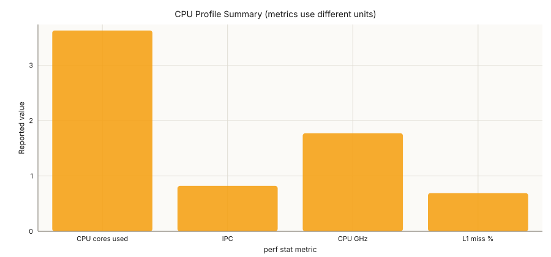

Throughput charts use exact llama-bench measurements. CLI charts show wall time only because actual generated-token counts and TTFT were not captured.
Recommendation: standard decoding with four threads is fastest. Two threads are nearly as fast and more CPU-efficient. F16 and Q8 KV are effectively tied for generation throughput; Q8's expected memory benefit was not measured.
| Workload | Rank | KV type | Throughput | Relative to best |
|---|---|---|---|---|
| Generation | 1 | f16 | 3.080 tok/s | 1.000 |
| Generation | 2 | q8_0 | 3.059 tok/s | 0.993 |
| Prefill | 1 | f16 | 7.112 tok/s | 1.000 |
| Prefill | 2 | q8_0 | 6.811 tok/s | 0.958 |
| Rank | Threads | Wall time | Speedup vs 1 |
|---|---|---|---|
| 1 | 4 | 96.317s | 1.84x |
| 2 | 2 | 98.422s | 1.80x |
| 3 | 1 | 177.005s | 1.00x |
| Rank | Method | Wall time | Result |
|---|---|---|---|
| 1 | Standard Q8 | 96.580s | Winner |
| 2 | Speculative | 209.712s | 2.17x slower |






{kind=link}
{kind=link}
{kind=link}
{kind=link}
{kind=link}
{kind=link}